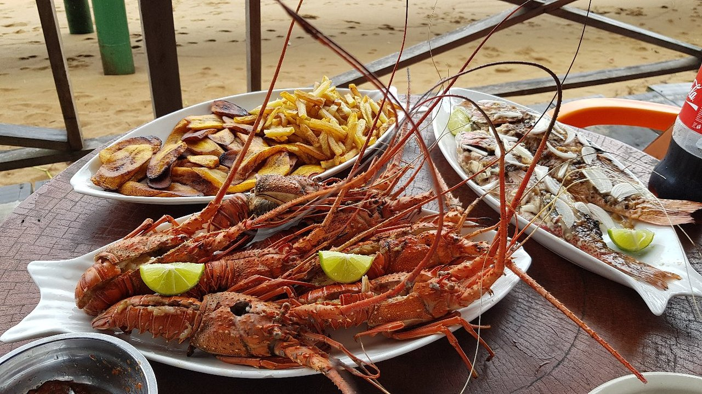

La cuisine camerounaise, préparée le jour même
Ndolé aux crevettes, mbongo tchobi, poulet braisé au feu de bois. Rien n'est réchauffé, rien n'est congelé — et ce qui n'est pas vendu le soir n'est pas servi le lendemain.

Nos engagements
-
Marché tous les matins
Les achats se font à six heures au marché de Nkololoun. Le menu du jour dépend de ce qu'on y trouve.
-
Livraison dans 9 quartiers
D'Akwa à Bonabéri, entre 25 et 55 minutes. Livraison offerte au-delà de 15 000 FCFA.
-
De 8 h à 22 h
Sept jours sur sept, du petit-déjeuner au dîner. Jusqu'à 23 h le samedi.
-
Produits d'ici
Huile de palme de Bonabéri, poisson du port, taro des Grassfields. Aucun ingrédient importé.
Les plus commandés
Six plats représentent la moitié des commandes. Si vous venez pour la première fois, commencez par là.
Une adresse à Akwa depuis 2016
Cuisine Locale est née d'un constat simple : à Douala, on mange très bien chez soi et très mal à l'extérieur. Entre le maquis qui sert la même sauce depuis trois jours et le restaurant qui « revisite » le ndolé jusqu'à le rendre méconnaissable, il manquait quelque chose.
Nous cuisinons les plats comme ils se font à la maison, avec le temps que ça demande. Le koki cuit trois heures en feuilles de bananier. Les haricots mijotent depuis la veille. C'est plus lent, et c'est le sujet.
Commander, réserver, ou passer
La commande en ligne se règle à la livraison, en espèces ou par Mobile Money. Pour une table, la réservation en ligne est confirmée en moins d'une heure.